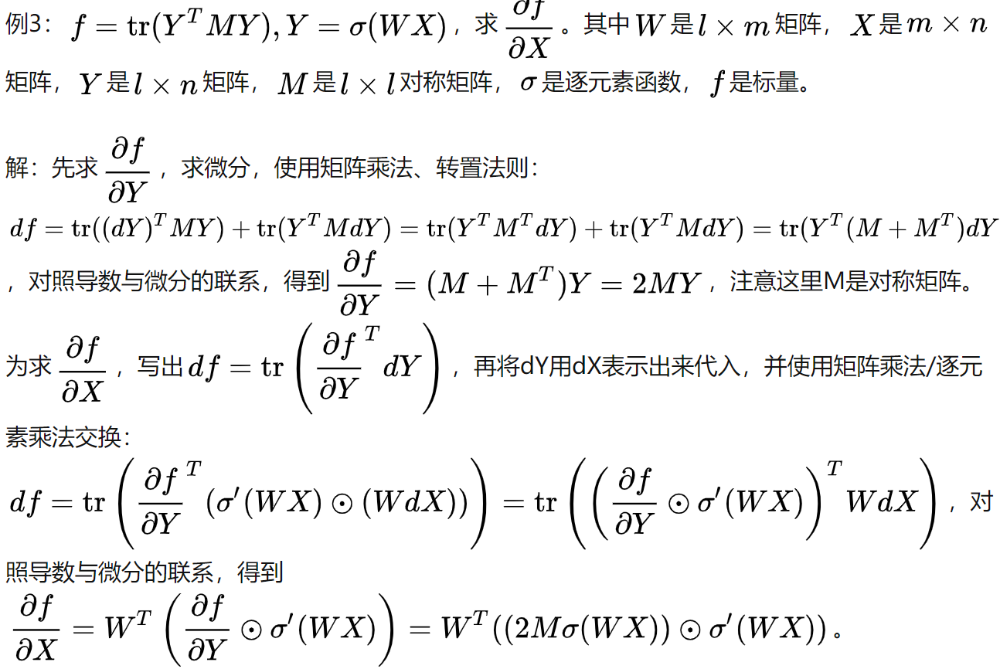
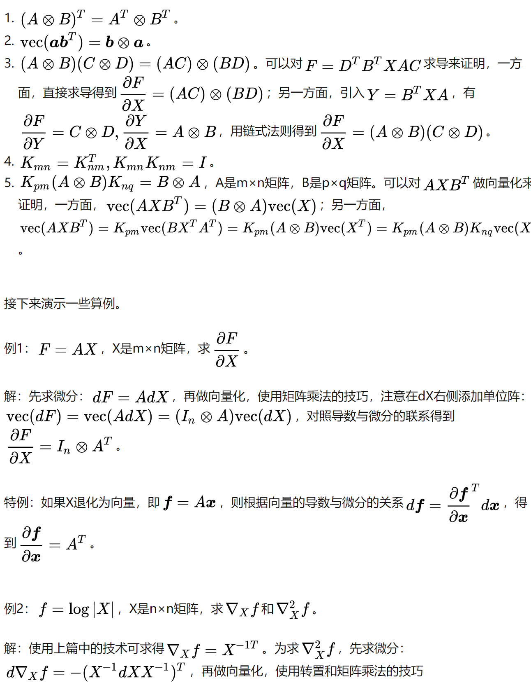
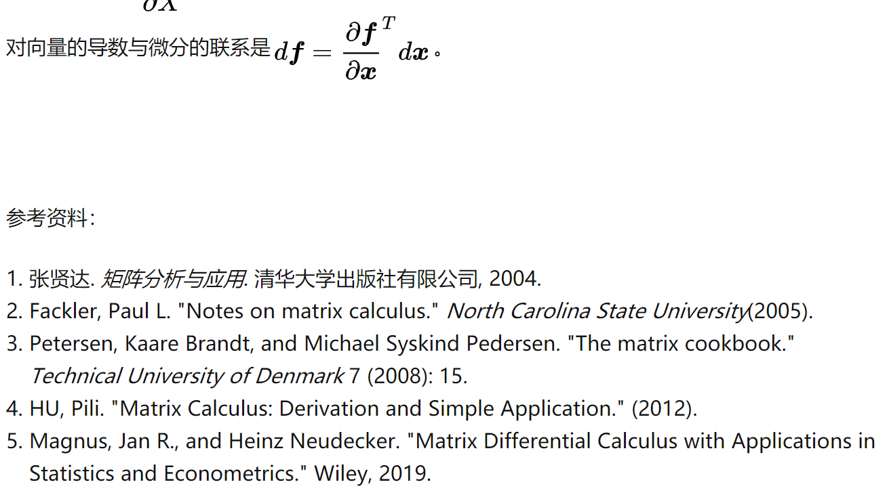

该博客转载于https://zhuanlan.zhihu.com/p/24709748
首先琢磨下定义，标量f对矩阵X的导数，定义为： ∂X∂f=[∂Xi,j∂f] ，即f对X逐元素求导排成与X尺寸相同的矩阵。然而，这个定义在计算中并不好用，实用上的原因是对函数较复杂的情形难以逐元素求导；哲理上的原因是逐元素求导破坏了整体性。试想，为何要将f看做矩阵X而不是各元素 Xi,j 的函数呢？答案是用矩阵运算更整洁。所以在求导时不宜拆开矩阵，而是要找一个从整体出发的算法。
为此，我们来回顾，一元微积分中的导数（标量对标量的导数）与微分有联系： df=f′(x)dx ；多元微积分中的梯度（标量对向量的导数）也与微分有联系：
df=i=1∑n∂xi∂fdxi=(∂x∂f)Tdx
这里第一个等号是全微分公式，第二个等号表达了梯度与微分的联系：全微分 df 是梯度向量 ∂x∂f (n x 1)与微分向量 dx (n x 1)的内积；受此启发，我们将矩阵导数与微分建立联系：
df=i=1∑mj=1∑n∂Xi,j∂fdXi,j=tr(∂X∂fTdX)
其中tr代表迹(trace)是方阵对角线元素之和，满足性质：对尺寸相同的矩阵A，B， tr(ATB=∑i,jAi,jBi,j) 即 tr(ATB) 是矩阵A，B的内积。与梯度相似，第一个等号是全微分，第二个等号表达了矩阵导数与微分的联系：全微分df是导数 ∂X∂f (m x n) 与微分矩阵 dX (m x n)的内积。
全微分之所以是导数和微分的内积，是因为 g(x)dy， 或者 z(y)dz 为 0，所以只有 f(x)dx才不为0.
然后来建立运算法则。回想遇到较复杂的一元函数如 f=log(2+sinx)ex ，我们是如何求导的呢？通常不是从定义开始求极限，而是先建立了初等函数求导和四则运算、复合等法则，再来运用这些法则。故而，我们来创立常用的矩阵微分的运算法则：
-
加减法： d(X±Y)=dX±dY ； 矩阵乘法： d(XY)=(dX)Y+X(dY) ； 转置： d(XT)=(dX)T ； 迹： dtr(X)=tr(dX)
-
逆： dX−1=−X−1dXX−1 。此式可在 XX−1=I 两侧求微分来证明。
-
行列式： d∥X∥=tr(X⋆dX) ，其中 X⋆ 表示 X 的伴随矩阵，在X可逆时又可写作： d∥X∥=∥X∥tr(X−1dX) 。此式可用Laplace展开来证明，详见张贤达《矩阵分析与应用》第279页。
-
逐元素乘法： d(X⊙Y)=dX⊙Y+X⊙dY ， ⊙ 表示尺寸相同的矩阵X，Y逐元素相乘。
-
逐元素函数： dσ(X)=σ′(X)⊙dX ， σ(X)=[σ(Xi,j)] 是逐元素标量函数运算， σ′=[σ′(Xi,j)] 是逐元素求导。
我们试图利用矩阵导数与微分的联系：
df=tr((∂X∂f)TdX)
，在求出微分 df 后，表达式 ∂X∂f 就是所求的 X 的导数。那么该如何写成右侧的形式并得到导数呢？这里需要使用迹技巧：
-
标量套上迹： a=tr(a)
-
转置： tr(AT)=tr(A)
-
线性： tr(A±B)=tr(A)±tr(B) 。
-
矩阵乘法交换： tr(AB)=tr(BA) ，其中 A 与 Bt 尺寸相同。两侧都等于 ∑i,jAi,jBj,i 。 tr(A⊙B)=tr(B⊙A) ，其中A和B的形状一样。
-
矩阵乘法/逐元素乘法交换： tr(AT(B⊙C))=tr((A⊙B)TC)
观察一下可以断言，若标量函数f是矩阵X经加减乘法、逆、行列式、逐元素函数等运算构成，则使用相应的运算法则对f求微分，再使用迹技巧给df套上迹并将其它项交换至dX左侧，对照导数与微分的联系 df=tr((∂X∂f)TdX) ，即能得到导数。
特别地，若矩阵退化为向量，对照导数与微分的联系 df=∂x∂fTdx ，即能得到导数。
在建立法则的最后，来谈一谈复合：假设已求得 ∂Y∂f ，而Y是X的函数，如何求 ∂X∂f 呢？在微积分中有标量的求导的链式法则 ∂x∂f=∂y∂f∂x∂y 但这里我们不能随意沿用标量的链式法则，因为矩阵对矩阵的导数 ∂X∂Y 是未定义的。于是我们继续追本溯源，链式法则是从何而来？源头仍然是微分。我们直接从微分入手建立复合法则：先写出 df=tr((∂Y∂f)TdY) ，再将 dY 用 dX 表示出来代入，并使用迹技巧将其他项交换至dX左侧，即可得到 ∂X∂f
-
Y=AXB
df=tr(∂Y∂fTdY)=tr(∂Y∂fTAdXB)=tr(B∂Y∂fTAdX)=tr((AT∂Y∂fBT)TdX) ，可得到 dX∂f=AT∂Y∂fBT 。注意这里： dY=(dA)XB+AdXB+AXdB=AdXB ，由于A，B是常量， dA=0,dB=0，以及使用了矩阵乘法交换的迹技巧交换了 ∂Y∂fTAdX 与 B .
-
f=aTXb ，求 ∂X∂f 。其中 a 是 m x 1 列向量， X是 m x n 矩阵， b 是 n x 1 列向量， f是标量。
解： 先使用矩阵乘法法则求微分， df=daTXb+aTdXb+aTXdb=aTdXb 。由于 df 是标量，它的迹等于自身， df=tr(df) ，套上迹并做矩阵乘法交换： df=tr(aTdXb)=tr(baTdX)=tr((abT)TdX) ，注意这里根据 tr(AB)=tr(BA) 交换了 aTdX 与 b ，对照导数与微分的联系： dfg=tr(∂X∂fTdX) ，得到 ∂X∂f=abT 。
注意这里不能用 ∂X∂f=aT∂X∂Xb=? ，导数与矩阵乘法的交换是不合法则的运算（而微分是合法的）。有些资料在计算矩阵导数时，会略过求微分这一步，这是逻辑上解释不通的。







